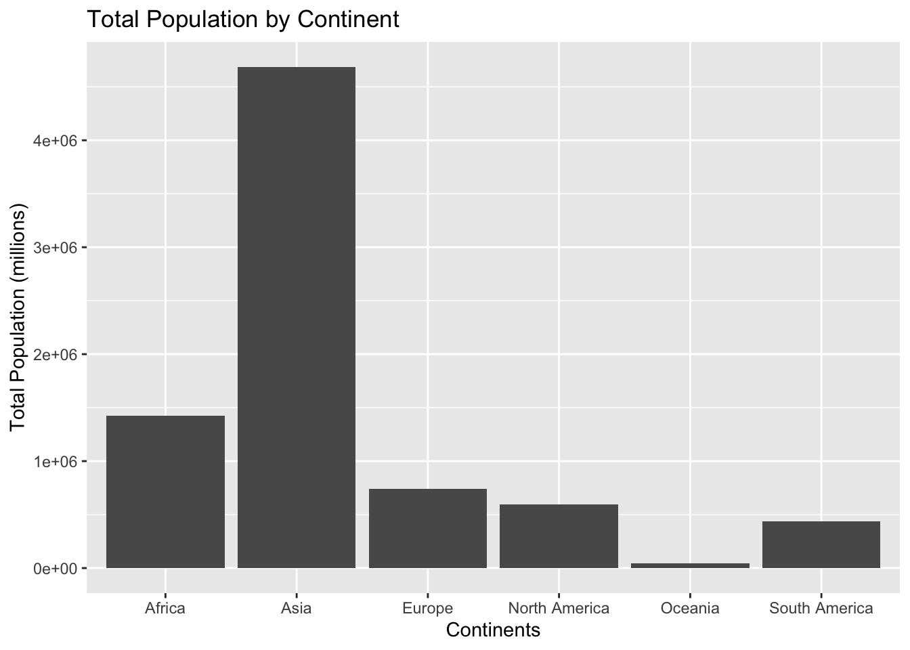
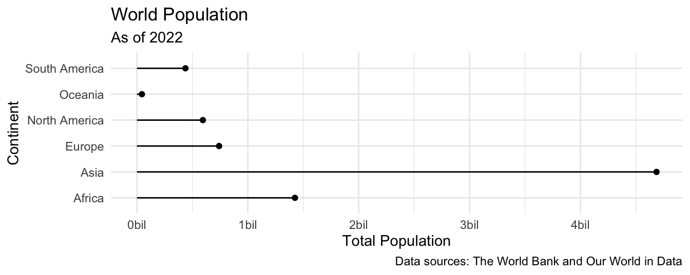

library(tidyverse) # for data wrangling and visualization
library(scales) # for pretty axis breaksAE 06: Joining country populations with continents
Goal
Our ultimate goal in this application exercise is to create a bar plot of total populations of continents, where the input data are:
- Countries and populations
- Countries and continents
Data
Countries and populations
These data come from The World Bank and reflect population counts as of 2022.
population <- read_csv("data/world-pop-2022.csv")Let’s take a look at the data.
population# A tibble: 217 × 3
country year population
<chr> <dbl> <dbl>
1 Afghanistan 2022 41129.
2 Albania 2022 2778.
3 Algeria 2022 44903.
4 American Samoa 2022 44.3
5 Andorra 2022 79.8
6 Angola 2022 35589.
7 Antigua and Barbuda 2022 93.8
8 Argentina 2022 46235.
9 Armenia 2022 2780.
10 Aruba 2022 106.
# ℹ 207 more rowsContinents
These data come from Our World in Data.
continents <- read_csv("data/continents.csv")Let’s take a look at the data.
continents# A tibble: 285 × 4
entity code year continent
<chr> <chr> <dbl> <chr>
1 Abkhazia OWID_ABK 2015 Asia
2 Afghanistan AFG 2015 Asia
3 Akrotiri and Dhekelia OWID_AKD 2015 Asia
4 Aland Islands ALA 2015 Europe
5 Albania ALB 2015 Europe
6 Algeria DZA 2015 Africa
7 American Samoa ASM 2015 Oceania
8 Andorra AND 2015 Europe
9 Angola AGO 2015 Africa
10 Anguilla AIA 2015 North America
# ℹ 275 more rowsExercises
Think out loud:
- Which variable(s) will we use to join the
populationandcontinentsdata frames?
We’ll use the common country/entity variable
- We want to create a new data frame that keeps all rows and columns from
populationand brings in the corresponding information fromcontinents. Which join function should we use?
left_join
- Which variable(s) will we use to join the
Demo: Join the two data frames and name assign the joined data frame to a new data frame
population_continents.
# add code here
population_continet<-population|>left_join(continents,by=join_by(country==entity))- Demo: Take a look at the newly created
population_continentdata frame. There are some countries that were not incontinents. First, identify which countries these are (they will haveNAvalues forcontinent).
population_continet|>filter(is.na(continent))# A tibble: 6 × 6
country year.x population code year.y continent
<chr> <dbl> <dbl> <chr> <dbl> <chr>
1 Congo, Dem. Rep. 2022 99010. <NA> NA <NA>
2 Congo, Rep. 2022 5970. <NA> NA <NA>
3 Hong Kong SAR, China 2022 7346. <NA> NA <NA>
4 Korea, Dem. People's Rep. 2022 26069. <NA> NA <NA>
5 Korea, Rep. 2022 51628. <NA> NA <NA>
6 Kyrgyz Republic 2022 6975. <NA> NA <NA> - Demo: All of these countries are actually in the
continentsdata frame, but under different names. So, let’s clean that data first by updating the country names in thepopulationdata frame in a way they will match thecontinentsdata frame, and then joining them, using acase_when()statement inmutate(). At the end, check that all countries now have continent information.
# add code here
population_continent <- population |>
mutate(country = case_when(
country == "Congo, Dem. Rep." ~ "Democratic Republic of Congo",
country == "Congo, Rep." ~ "Congo",
country == "Hong Kong SAR, China" ~ "Hong Kong",
country == "Korea, Dem. People's Rep." ~ "North Korea",
country == "Korea, Rep." ~ "South Korea",
country == "Kyrgyz Republic" ~ "Kyrgyzstan",
.default = country
)
) |>
left_join(continents, by = join_by(country == entity))
population_continent |>
filter(is.na(continent))# A tibble: 0 × 6
# ℹ 6 variables: country <chr>, year.x <dbl>, population <dbl>, code <chr>,
# year.y <dbl>, continent <chr>- Think out loud: Which continent do you think has the highest population? Which do you think has the second highest? The lowest?
Asia has the highest population, with Africa being second and lowest being Oceania
- Demo: Create a new data frame called
population_summarythat contains a row for each continent and a column for the total population for that continent, in descending order of population. Note that the function for calculating totals in R issum().
population_summary <- population_continent |>
group_by(continent) |>
summarize(total_pop = sum(population)) |>
arrange(desc(total_pop))
population_summary# A tibble: 6 × 2
continent total_pop
<chr> <dbl>
1 Asia 4685922.
2 Africa 1424831.
3 Europe 740607.
4 North America 594415.
5 South America 437233.
6 Oceania 44752.- Your turn: Make a bar plot with total population on the y-axis and continent on the x-axis, where the height of each bar represents the total population in that continent.
# add code here
ggplot(population_summary, aes(x = continent, y = total_pop)) +
geom_col() +
labs(x = "Continents", y = "Total Population (millions)", title = "Total Population by Continent")
- Your turn: Recreate the following plot, which is commonly referred to as a lollipop plot. Hint: Start with the points, then try adding the
segments, then add axis labels andcaption, and finally, as a stretch goal, update the x scale (which will require a function we haven’t introduced in lectures or labs yet!).

# add code here
ggplot(population_summary, aes()) +
geom_point(aes(x = total_pop, y = continent)) +
geom_segment(aes(y = continent, yend = continent, x = 0, xend = total_pop)) +
scale_x_continuous(labels = label_number(scale = 1/1000000, suffix = "bil")) +
theme_minimal() +
labs(
x = "Total Population",
y = "Continent",
title = "World Population",
subtitle = "As of 2022",
caption = "Data sources: The World Bank and Our World in Data"
)
- Think out loud: What additional improvements would you like to make to this plot.
Increase the size of the points, and add color for easy distinguishing.